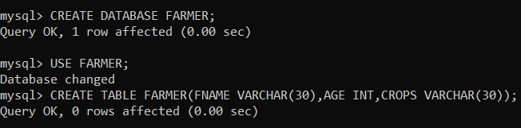
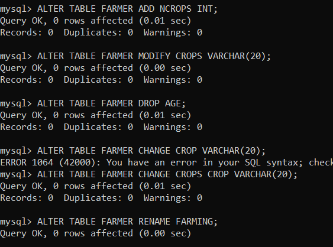
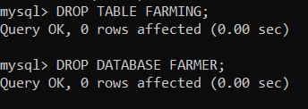

DDL Commands
In this it consists of three different commands.
DDL or Data Definition Language
actually consists of the SQL commands that can be used to define the database schema.
simply deals with descriptions of the database schema and is used to create and modify
the structure of database objects in database.
It includes create,alter,drop.
CREATE -is used to create the database or its objects

ALTER -is used to alter the structure of the database.

DROP – is used to delete objects from the database.
